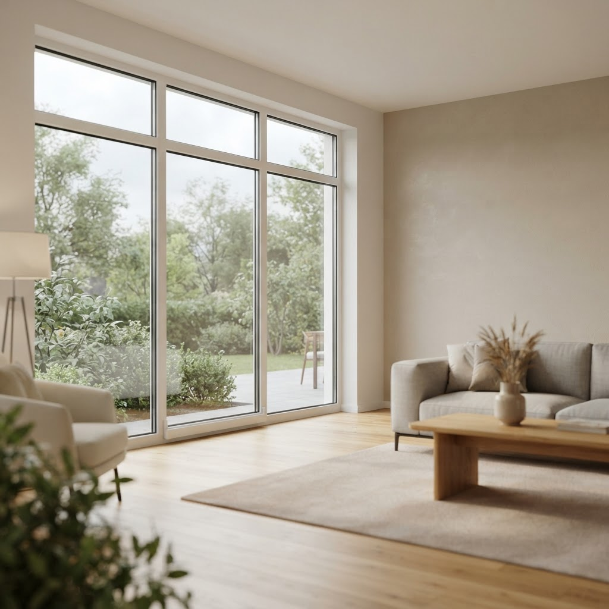

Как заказать ремонт косых окон в Центральном округе

Содержание
В Москве Центральный округ отличается обилием архитектурных форм, где нестандартные проемы встречаются чаще, чем в типовой застройке. Мы специализируемся на профессиональном обслуживании и приведении к норме сложных конструкций, поэтому часто получаем запросы на то, как заказать ремонт косых окон в Центральном округе.
Порядок действий
Для начала сотрудничества закажите бесплатный замер, в ходе которого мастер рассчитает стоимость на объекте и зафиксирует цену в договоре.
Как заказать ремонт косых окон в Центральном округе
Работа с трапециевидными и арочными створками требует иного подхода, чем с прямоугольными изделиями. В нашей практике был случай в историческом здании: заказчик столкнулся с проседанием тяжелой створки неправильной формы, из-за чего фурнитура перестала плотно прижимать уплотнитель. Геометрия таких конструкций подвержена повышенным нагрузкам на нижнюю петлю, так как центр тяжести смещен. Мы провели полную диагностику прилегания и выявили износ основного углового переключателя. Процесс восстановления включал перераспределение веса створки с помощью профессиональных регулировочных клиньев и замену изношенных узлов на усиленные аналоги. Мы не просто подтянули петли, а полностью настроили работу механизмов запирания по всему периметру сложного контура, обеспечив плавность хода и отсутствие продуваний. Качественный результат в данном случае зависит от точного соблюдения углов при настройке фурнитуры.
Технические нюансы настройки скошенных конструкций
Основная сложность трапециевидных окон заключается в нестандартном распределении усилий при закрывании. Если мастер не учитывает специфику угла наклона верхней петли, неизбежно возникнет перекос и износ уплотнительного контура. В нашей практике мы сталкиваемся с тем, что некачественная регулировка приводит к «затиранию» в верхней точке скоса. При работе с такими объектами мы сначала проверяем диагонали створки и их соответствие раме. Затем переходим к отладке многозапорных механизмов, которые в косых окнах имеют удлиненные тяги. Мы обязательно проводим тест на герметичность тепловизором, чтобы исключить скрытые потери тепла. Такой системный подход позволяет добиться долговечной службы фурнитуры даже при нестандартных геометрических параметрах окна. Мы обеспечиваем полную функциональность сложных элементов, исключая необходимость дорогостоящей замены всей конструкции.
Можно ли отремонтировать окно, если оно перестало закрываться под углом?
Да, такая проблема решается путем перенастройки фурнитурной обвязки и центрирования створки. Мы проводим диагностику, выравниваем положение окна относительно проема и восстанавливаем корректную работу прижимных механизмов. Профессиональное вмешательство позволяет полностью устранить перекос без замены дорогостоящих профилей. Короткий вывод: качественное обслуживание сложных оконных конструкций требует точного инженерного расчета и строгого соблюдения геометрии при регулировке механизмов.
Бесплатный замер
Оставьте заявку — специалист приедет в удобное время, проведет замеры, выполнит расчеты и зафиксирует итоговую стоимость в договоре.
Заказать остеклениеНаши статьи
 Выведение окна из режима проветривания в Центральном округе — что важно знатьЦентральный административный округ Москвы отличается высокой плотностью застройки и сложной архитектурой зданий, что накладывает особые требования на обслужи…
Выведение окна из режима проветривания в Центральном округе — что важно знатьЦентральный административный округ Москвы отличается высокой плотностью застройки и сложной архитектурой зданий, что накладывает особые требования на обслужи…